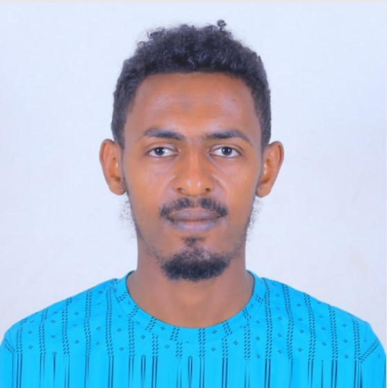

Mubarek Abdella

Summary
I'm a competent and hard working person and also very eager to learn new
things which makes me an asset to any comany who haves me on their team.
Educational Background
- From grade 1 to 8: Burka Bekumsa Elementary school (1999-2006 E.C)
- From grade 9 to 10: Darge High School (2007-2008 E.C)
- From grade 11 to12 : Nekemte Preparatory (2009- 20011 E.C)
- Bachelor of Science (B.Sc.) Degree in Computer Engineering: Jimma University (Jimma institute of technology) (2011-2015 E.C)
Skill Highlights
- AI programming
- Programming language Like C++, java, Python, Dart
- Graphic Design
- Embedded Systems
- Communication and teamwork skill
- Service-focused
- Presentation and Public Speaking skill
Education
Bachelor of Science (B.Sc.) Degree in Electrical and Computer
Engineering
(Computer Engineering Focus Area) from Jimma
University with CGPA 3.74 on July 19, 2023
Certifications
- Certificate of Appreciation from Faculty of ECE by ranking 1st
in final year research/project at faculty of ECE.
- Certificate of Award from Jimma Institute of Technology,Jimma University ranking 2nd among
selected final year research in the year of 2023.
- Certificate of completion of “Art of Public Speaking” training
given at Jimma University in the year 2023.
Languages
Type Writing Listening Reading Speaking
A/oromo Excellent Excellent Excellent Excellent
Amharic Excellent Excellent Excellent Excellent
English Excellent Excellent Excellent Excellent
Contact
Hobbies